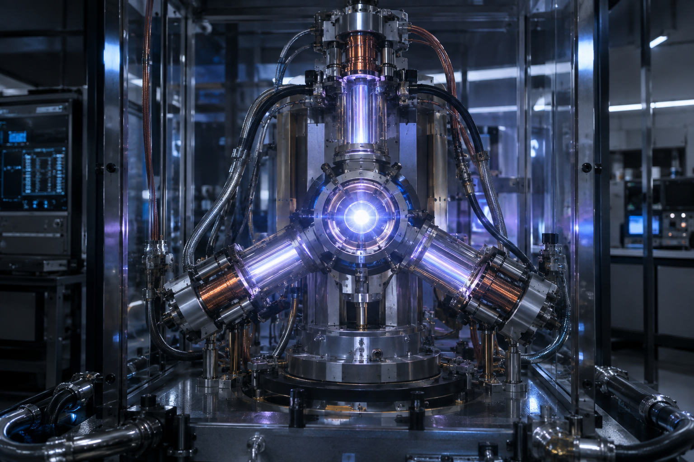
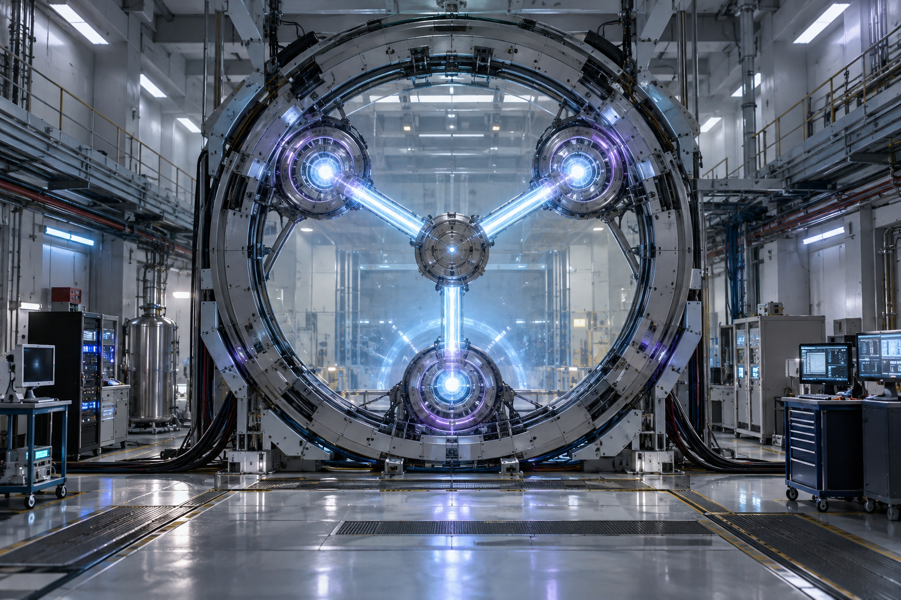
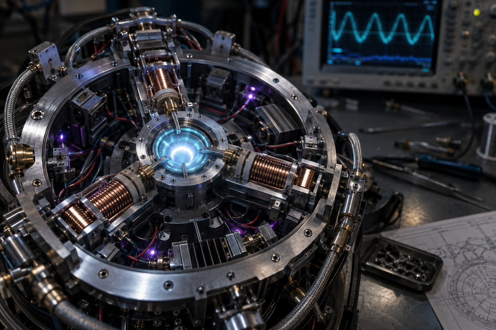
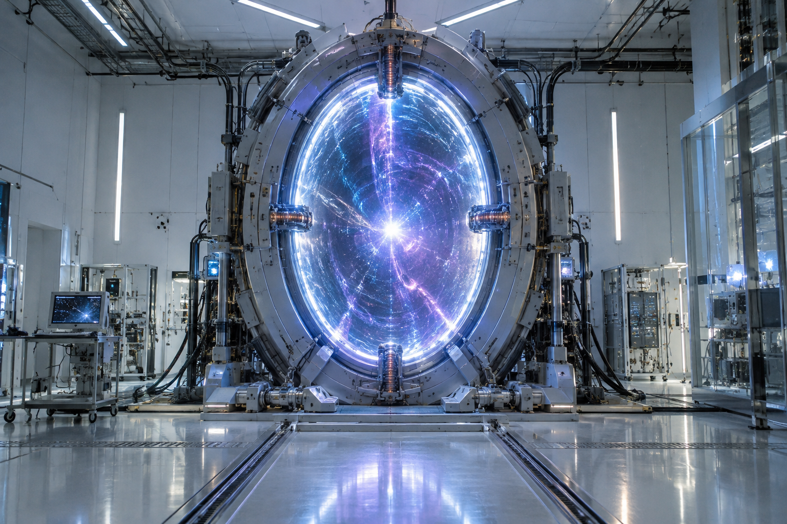
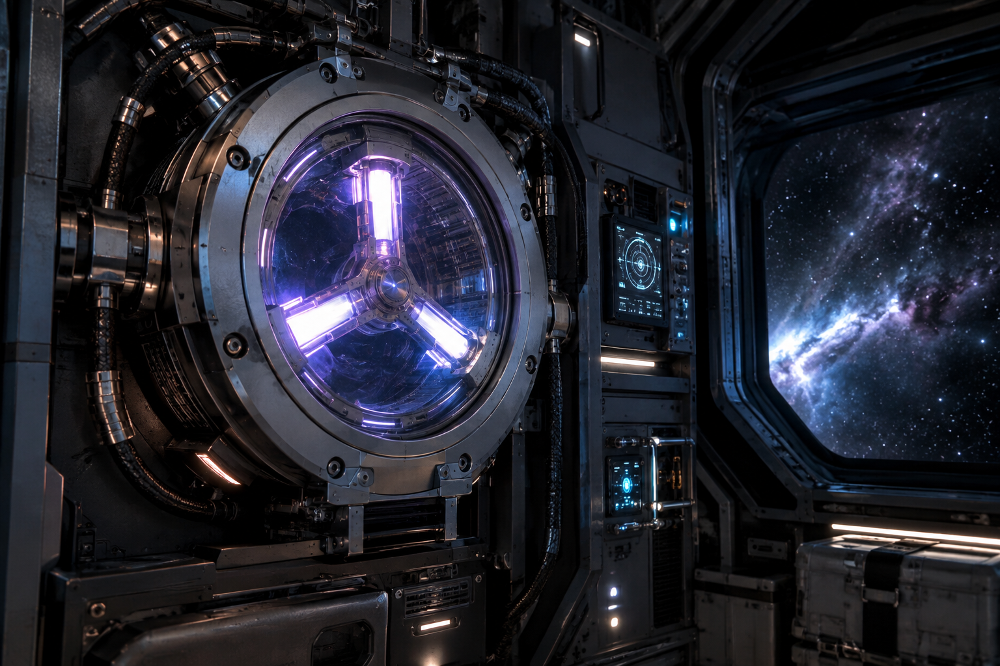
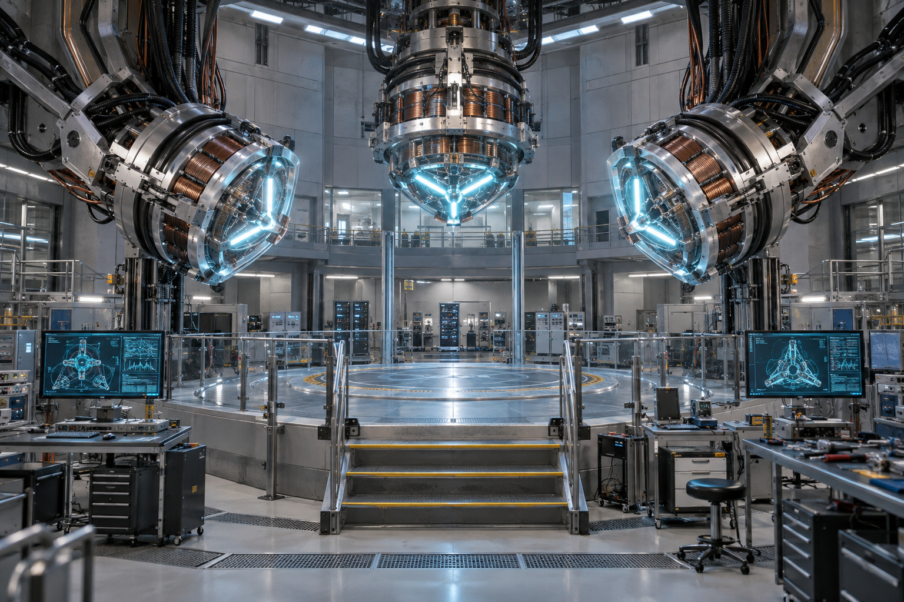

01 / Core assembly
Cutaway view of the three-arm flux geometry.
Temporal engineering / 1.21 gigawatts
The Flux Capacitor is the heart of every great leap through the timeline: a precision field generator that can be integrated into vehicles, vessels, gateways, laboratories, or any platform built to cross time.
Technical briefing
The Flux Capacitor is a tri-arm temporal field generator. It does not store "time" like a battery; it shapes a coherent field around a selected platform—vehicle, vessel, gateway, chamber, or remote probe—and locks that field to a chosen destination coordinate.
The central emitter establishes the phase reference for the entire field. Every arm must remain synchronized to this point.
Three orthogonal arms distribute the energy pulse across a balanced geometry, preventing the field from collapsing into a single-axis discharge.
A feedback path measures phase drift and routes corrective energy back into the amplifier before the jump threshold is crossed.
Engineering note: "1.21 gigawatts" is the proposed pulse requirement for a stable transition. Initiation velocity is only one possible trigger; a fixed gateway or laboratory chamber can use a synchronized field pulse instead.
Advanced systems analysis
A research-grade systems model for a proposed temporal field platform.
The capacitor uses three mutually orthogonal emitter arms to establish a closed temporal field. Each arm receives a synchronized pulse from the flux amplifier, while the return loop measures phase error and applies corrective current before coherence drops below the transition threshold.
The destination is represented as a four-dimensional coordinate vector: three spatial axes plus a temporal index. The navigation computer continuously compares the requested vector with the live field vector, then modulates the phase offset until the error signal approaches zero.
| Subsystem | Nominal condition |
|---|---|
| Flux amplifier | 1.21 GW pulse capacity |
| Emitter geometry | Three-arm orthogonal array |
| Phase lock | < εcritical drift |
| Initiation vector | 88 MPH minimum velocity |
| Return loop | Closed-loop correction active |
| Containment field | Stable / no cascade detected |
Mission control
Technical archive
Two simplified schematics explain how the temporal field comes alive. Follow the energy, find the core, and mind the feedback loop.
Cutaway view of the three-arm flux geometry.
Signal path from power source to destination lock.
Inside the mechanism
At the intersection of energy, motion, and imagination, the capacitor opens a window to somewhere else in time.
A focused burst of energy gives the system enough charge to bend the rules of ordinary travel.
At the right phase relationship, the capacitor synchronizes its platform with a new temporal coordinate.
Every jump needs a date, a place, and a reason. The rest is history waiting to happen.
Prototype photography
Engineering studies of the Flux Capacitor as a laboratory core, a full-scale gateway, and an internal assembly.



Field applications
From fixed portals to mobile vessels and controlled calibration bays, the same core can power different temporal architectures.



A short history of a big idea
An experiment, a clock, and one spectacular accident reveal that time may be more flexible than it looks.
The first successful temporal test proves that the future is not as far away as anyone thought.
We are still mapping the operating envelope. That is exactly what makes the journey worth taking.
“The future is whatever you make it. So make it a good one.”— A reminder for every time traveler